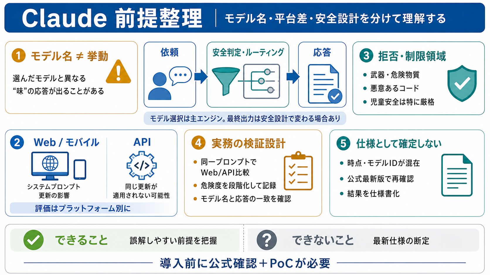

Claude 前提整理
02 / 14
読みやすく圧縮
要点と注意点
提示文は複数時点・複数モデルの混在を含むため、「重要な前提」と「誤解しやすい不確実点」をセットで整理します。
対象
モデル選択 / Web vs API / ルーティング / セーフガード / 安全方針
注意
最新仕様の確定は不可。公式の最新版で再確認が必要
Problem
03 / 14
期待がズレる
モデル名≠挙動
同じ会話でも、セーフガードの都合で別モデルにルーティングされ得ます。 その結果「選んだモデルの味」と違う応答が起きます。
i
例として、入力中では
Fable 5
のような高能力モデルでも安全上の理由で 応答が
Opus 5側に置換
される可能性が示唆されています。
Metaphor
04 / 14
二重のフィルタ
選別機構
モデル選択は「主エンジン」であって、最終出力は安全設計（セーフガード）で再配線される場合があります。
あなた
依頼（トピック/意図）
システム
安全判定・ルーティング
結果
選択モデルと一致しない可能性
→ このズレは「バグ」ではなく、設計上の現象として理解する必要があります。
Architecture
05 / 14
WebとAPI
プロンプト差
Web/モバイルは会話開始時にシステムプロンプトを送り、更新（例：日付、Markdown等）を促す場合があります。 一方、これらの更新はAPIには適用されないとされています。
Web / モバイル
システムプロンプト更新の影響を受ける
API
同一の更新が適用されない可能性
Comparison
06 / 14
同じ指示でも
出力が変わる
同じ依頼を投げても、WebとAPIで出力形式・文体・最新情報の扱いが揺れる可能性があります。 よって評価や検証は「プラットフォーム別」に行うべきです。
i
Webはシステム側の更新（例：日付）で方向性が変わり得る
ii
APIは同様の更新が適用されないため、傾向が一致しない場合がある
Enumeration
07 / 14
ツールの広さ
製品エコシステム
Claude Code / Claude Cowork / Chrome・Excel・PowerPoint連携 / Claude Tagなど、連携先が多いとされています。 ただし「ツール名がある＝手順が常に分かる」とは限りません。
例（機能）
統合・連携（Chrome / Excel / PowerPoint 等）
例（エージェント）
Claude Code / Claude Cowork
→ 利用は公式ガイド参照＋PoCでの確認が必要（文中にアクセス制約の示唆あり）。
Evidence
08 / 14
拒否方針
危険領域
武器・マルウェア等の危険領域や、児童安全に関しては拒否・制限が明確に示されています。 依頼カテゴリの当たり方が結果を大きく左右します。
対象
危険物質 / 武器
対象
悪意のあるコード
重点
児童安全（特に厳格）
Distinction
09 / 14
グレーでも
反応が変わる
依頼の意図が正当でも、危険領域や児童安全に近い場合は制限に触れる可能性があります。 文章だけでは「どこでトリガーされるか」は確定できません。
i
「拒否/制限がどの程度のグレー領域で発火するか」は、実データでの挙動テストが必要です。
Process
10 / 14
実務の進め方
検証設計
モデル差・Web/API差・ルーティングを前提に、同一条件での比較テストを組み込みます。
i
同一プロンプトで Web と API を並行比較する
ii
セーフガードが関わり得るトピックを段階化して挙動を記録する
iii
選択モデル名と実応答の一致性（ルーティング有無）を確認する
Distinction
11 / 14
ここが不確か
時点の混在
入力文は複数バージョン（Opus 5 / Fable 5 など）にまたがり、モデルIDやナレッジカットオフ日が一貫しない可能性があります。 そのため「どれが現在の正」かを読み手が誤認しやすい点が弱点です。
リスク
時点依存情報をそのまま仕様化しがち
対策
最新の公式ページで再確認が必須
Governance
12 / 14
運用で効く
仕様書化
Web更新がAPIに適用されない等の差分は、品質保証やコンプライアンスの観点で重要です。 プラットフォーム別にプロンプト仕様とテスト結果を管理する発想が必要になります。
ポイント
：モデル名・プラットフォーム・安全条件を分解して管理すると、誤解と事故を減らせます。
Closing
13 / 14
結論
たたき台止まり
この入力は「理解のための前提整理」には有用ですが、混在時点やマスク情報の欠落により仕様として確定できません。 導入時は公式最新版の再確認と、Web/API・ルーティング・拒否基準のPoCが必要です。
できること
誤解しやすい前提（モデル名≠挙動、Web≠API、安全設計）を把握
できないこと
最新のモデルID/カットオフ/制限の確定（公式で要検証）
REFERENCES
14 / 14
References
No references found